When adding third party packages to your codebase, it is important to scrutinize where this code is coming from. A single package that is included by a developer may depend on dozens of other packages that must all be secured in order for the application using the package to be secure. There are many things to consider before adding a package to your codebase.
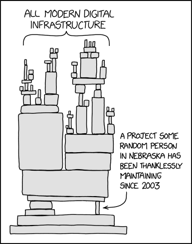
In this level, you will learn how to quickly gather a report of the dependencies a codebase is utilizing and potential vulnerabilities that they include.
Suppose the company you work for has a few projects in the works, but your project leader is worried about the dependencies these projects are using and tasks you with the responsibility to assure them the supply-chain is "secure" by identifying any abandoned packages and packages that contain critical vulnerabilities, often referred to as CVEs (Common Vulnerability and Exposures).
As part of this effort, you will use techniques to
In this part of the lab, we will use tools that collect information on the package dependencies of an application. The application is provided in a Docker container. On the Linux VM for the course, run the following command to download the container image from its Dockerhub repository.
docker pull wuchangfeng/bom
The command pulls the sbom image from the specified Dockerhub repository. Next you're going to need to spin up a container using this level's docker image.
Run the following command to create a bash shell into the container
docker run -it --rm wuchangfeng/bom /bin/bash
This command launches an instance of the container image wuchangfeng/bom stored on Dockerhub and then gives you an interactive bash shell on it (via the -it flag and /bin/bash). The flag --rm is given to remove the running container when the shell is exited. Typically, this is done when you do not wish to retain any of the state on the container and want it deleted after exit.
After launching the container and obtaining a shell, perform an ls listing and then exit the container. A screenshot is shown below showing the output indicating which parts are executing on the container.
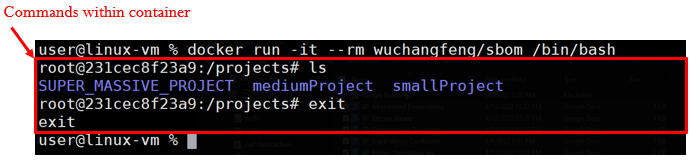
Launch the container again, then change directories to smallProject. If you run ls you will see that there are two files: app.py and requirements.txt. Create a custom virtual Python environment for the project that will contain a copy of the Python interpreter and all of the packages that will be used by the application.
python3 -m venv venv
If you run another ls command you will see there is a newly created venv directory.
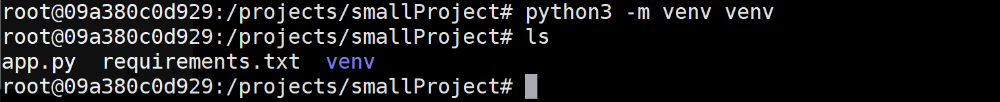
To use this environment, we must first activate it using the command below. You should see a (venv) at the beginning of the current line in the terminal. Always ensure that this environment is activated to utilize it.
source venv/bin/activate
Then, view the packages listed in the requirements.txt file and then use Python's package installer (pip) to install the packages into your virtual environment.
cat requirements.txt pip install -r requirements.txt
Note that the packages specified in requirements.txt have other packages that they depend upon being installed. pip automatically installs these dependencies as shown in its output. All packages are installed within the virtual environment. Run the command below to locate where the packages are installed within the venv directory.
find venv -name <PackageName>
Change into the directory containing the packages that have been installed. For each package, there is a directory containing distribution information that ends with "dist-info". You can list them via the command.
ls -ld *dist-infoEach directory contains a file called METADATA that contains a summary description of the package. Find the METADATA file for the Flask package and view it.
As the file shows, a line beginning with "Summary: " contains a description of the package. We can view the summary for each package that has been installed via the command below.
grep -E "^Summary:" *.dist-info/METADATARead through the summaries of each package dependency that has been installed for the application.
Deactivate the virtual environment using the command below:
deactivate
Gathering information for packages by hand can be tedious and time consuming. A Software Bill of Materials (SBOM) is a document that lists and describes all of the 3rd party software being used or included in a project including its packages and their dependencies. Generally, information about each software component includes its author, publisher, name, description, version, and licenses. The information is critical in attempting to ensure the security of the software supply chain an application depends upon. As seen in the prior project, one place this information can be found is in the dist-info directory for a Python package.
There are a variety of specification formats an SBOM can adhere. One such format is OWASP's CycloneDX. In this part of the lab, we'll use the Python package cyclonedx-bom to generate an SBOM for an application. To begin with, in the Docker container, change into the mediumProject directory.
cd /projects/mediumProject
Ensure that you have deactivated the prior virtual environment. Then, install the cyclonedx-bom Python package within the system's Python packages.
pip install cyclonedx-bom
Using the steps from the prior project, create and activate a new virtual environment, but within the mediumProject directory. Then, install the Python packages within the mediumProject's requirements.txt file.
In order to use the cyclonedx package, you must first perform a pip freeze command on the installed packages in the virtual environment. The command tells you the specific version of the packages installed which identifies the versions that need to be recorded in the SBOM. Note that for packages in requirements.txt with no specified version, the package's latest version is installed. By performing a pip freeze, you record the exact version of the package that was downloaded. Ensuring the packages from requirements.txt have been installed in the virtual environment already, run the pip freeze command to see their versions.
pip freeze
Then, run the command again, but redirect its output back into the requirements.txt file.
pip freeze > requirements.txt
Finally, use the cyclonedx-py command that has been installed as part of the cyclone-bom package to generate the SBOM. The command will look in the current directory for a requirements.txt. If you pass the -j flag it will create an SBOM with JSON formatting instead of the default xml format. Generate the SBOM in JSON format and save the SBOM in bom.json.
cyclonedx-py --format=json -r -i requirements.txt -o bom.json
There will now be a newly generated bom.json file in the current directory.
Examine the content within the bom.json file. Because objects represented in JSON can have complex structures, you may find that copying and pasting its contents into an on-line JSON formatter will be helpful. Within the JSON in the file, is an array of objects called components describing each component used in the application. For each component in the array, the name and version is given. Python comes with a JSON parser that will allow us to easily sequence through the JSON and return each one. To do so, bring up an interactive python3 session.
python3
Within the python shell, we can interactively run commands using the Python interpreter. Begin by importing the Python json package for parsing JSON. Then, open the file and read its contents into a string. Parse the string using json.loads() to generate a Python dictionary (bom) that represents the BOM.
import json
json_string = open('bom.json','r').read()
bom = json.loads(json_string)
Then, use a loop to sequence through the components array in the dictionary.
for component in bom['components']: print(component['name'], component['version'])
From the output, a list of packages and their versions is printed. Keep this output for the next step.
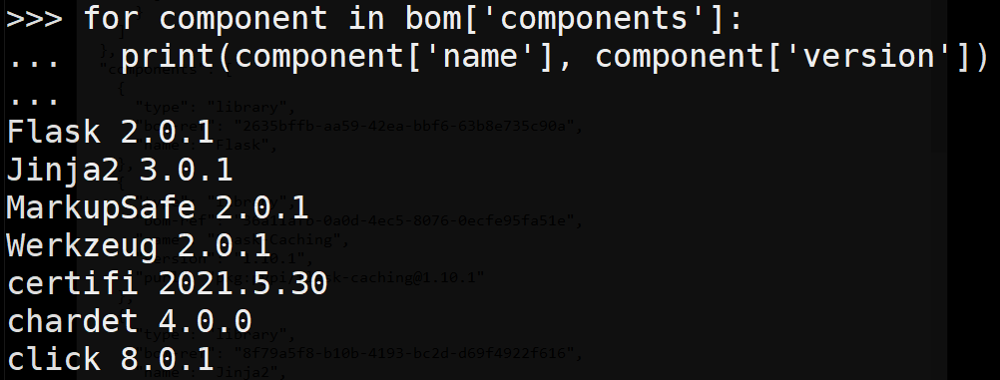
One purpose for knowing the version of a package is the ability to check (and possibly exploit) a known vulnerability. These known vulnerabilities are called Common Vulnerabilities and Exposures (CVE) There are some existing databases that keep track of all the known vulnerabilities. There are several major public databases to choose from, however, we will be using the National Vulnerability Database (NVD) maintained by the National Institute of Standards and Technology (NIST). Visit its site at https://nvd.nist.gov/vuln/search.
We can search for any CVEs that have been published for a particular package and its version using the NVD. Within the search form, individually search for each package as shown below for the Flask 2.0.1 package that is part of the BOM.
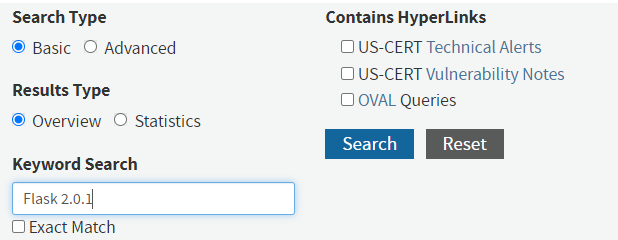
While this particular search above will reveal 0 matching records, one of the packages in the application's BOM is using a version that has a CVE with a CVSS score of 9.8 that was published on May 13, 2021. Such a high score indicates a critical vulnerability that usually allows an adversary remote code execution and should be immediately addressed.
Click on the link describing the CVE. The Common Weakness Enumeration framework (CWE) describes the class of weakness that causes the vulnerability.
This weakness is one of the reasons why JSON has become the defacto standard for data transmission over the web.
Run the following command to deactivate the virtual environment.
deactivate
Searching for that information can be quite cumbersome for projects with a large number of packages. Whether you're trying to find a vulnerability or catch them before they can be exploited, doing so manually as you have done in the prior step is not pleasant.
Snyk is a tool that can perform these sorts of scans for you (and so much more, but this is going to be the primary use for this component). In order to use Snyk command line, create a free account with Snyk at https://snyk.io/.
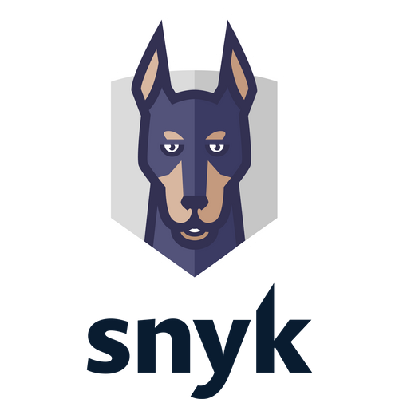
After creating your account, go to your account settings, generate an authentication token, and then copy it.
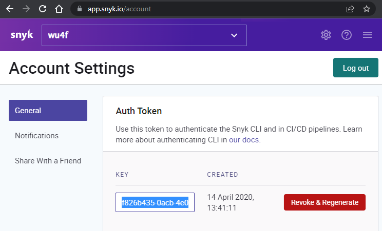
Back on the container, authenticate the command line tool by running the command below, filling in your authentication token.
snyk auth <AUTH_TOKEN>
You should have an output similar to the one below that indicates that the command is ready for use.
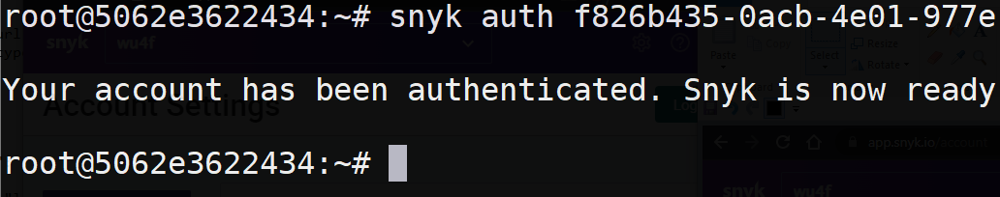
We will now use Snyk to automatically scan for packages with vulnerabilities in a large application in the SUPER_MASSIVE_PROJECT directory. Begin by changing into its directory at /project/SUPER_MASSIVE_PROJECT, creating a Python3 virtual environment in it, and installing its packages in requirements.txt as in the previous projects.
which can be done by changing directories into /projects/SUPER_MASSIVE_PROJECT. Similarly to the other directories there are two files app.py and requirements.txt. However, this application has many more dependencies. You're going to want to create a virtual environment, just like before, as Snyk is going to analyze this environment using the pip package manager.
Run the following commands to create the virtual environment, to activate it, and to install the packages specified in the requirements.txt
python3 -m venv venv source venv/bin/activate pip install -r requirements.txt
Run the following command to perform a vulnerability scan
snyk test
The output will contain a set of known vunleralabilties, along with their patches (if they exist), information about the sort of vulnerability it is.
Run the following command to exit the container
exit
One prevalent type of attack on software supply-chain is the typosquatting attack. The attack begins by an adversary identifying a popular package that implements functionality that is useful for developers. As the code has been published in both the package repository and on source code repositories such as Github, the adversary then forks a copy of the package and renames it to something that closely resembles the original package.
Malicious packages published on Python's PyPI repository have been downloaded tens of thousands of times. The figure below shows some of the common packages that can be targeted for such attacks.
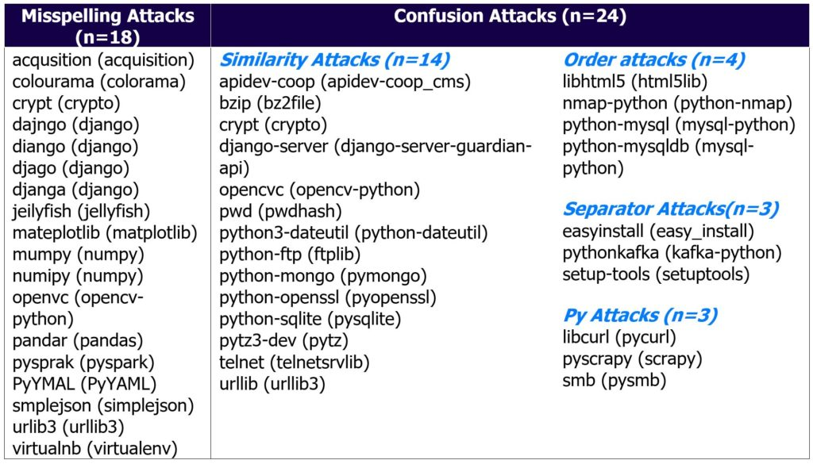
In this lab, you will investigate an application running within a Docker container that is behaving suspiciously to identify a malicious package that typosquats a popular Python package in order to run a crypto-miner.
To begin with, on your Linux VM, pull the Docker container image containing the web application.
docker pull wuchangfeng/typosquat
Then, run the container, supplying flags that launch an interactive session on it (-it) and that instructs docker to remove the container when the user exits from it (--rm).
docker run -it --rm wuchangfeng/typosquat /bin/bash
Within the container, run the Python Flask web application as a background process.
python3 app.py &
The application starts up and listens on port 5000 as shown below:
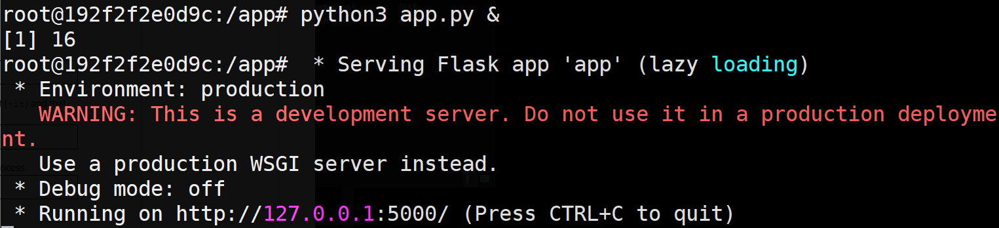
ackground, we can perform a process listing to see all of the processes that are being run. Make a note of the PID for the process that is running the web application
ps auxww
On the container, use curl to retrieve the landing page of the web application.
curl http://127.0.0.1:5000
The server sends back a response indicating that the server was accessed at a particular time of day using a custom datetime format. It also returns the time in PDX.
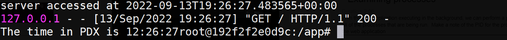
Repeat the process listing command from above. A new process has been spawned. Answer the following questions.
%CPU is the process consuming?Using the steps in previous parts of the lab, find the METADATA file for the Python package.
Make a note of the "Home-page" field. The URL, when visited, will return an error.
The package installer for Python (pip) can be given a URL in a file named direct_url.json which is then used to download the package code from. Go back to the directory where you found the METADATA file and examine the direct_url.json file there. Visit the URL in the JSON file to find the Github repository that the code has been downloaded from. The Github repository has been forked from another repository.
As shown in this example, one can create a rogue copy of a popular package and use typosquatting to trick a user into including it in an application. As the expected functionality of the original package is maintained, the attack can easily go undetected.
To finish, exit the container.
exit